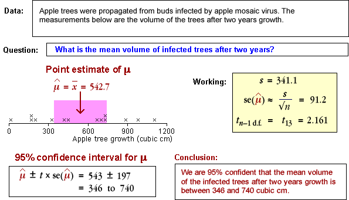

Examples

Mention that in practice we only have a single sample (and a single confidence interval).
The method that we use to obtain the confidence interval has probability 0.95 of including µ.
We cannot tell whether the single interval that we evaluate from our data set is one of these 'lucky' intervals.
Knowing that the method works so often gives us 95% confidence in this interval.
The data sets are described in the diagram.